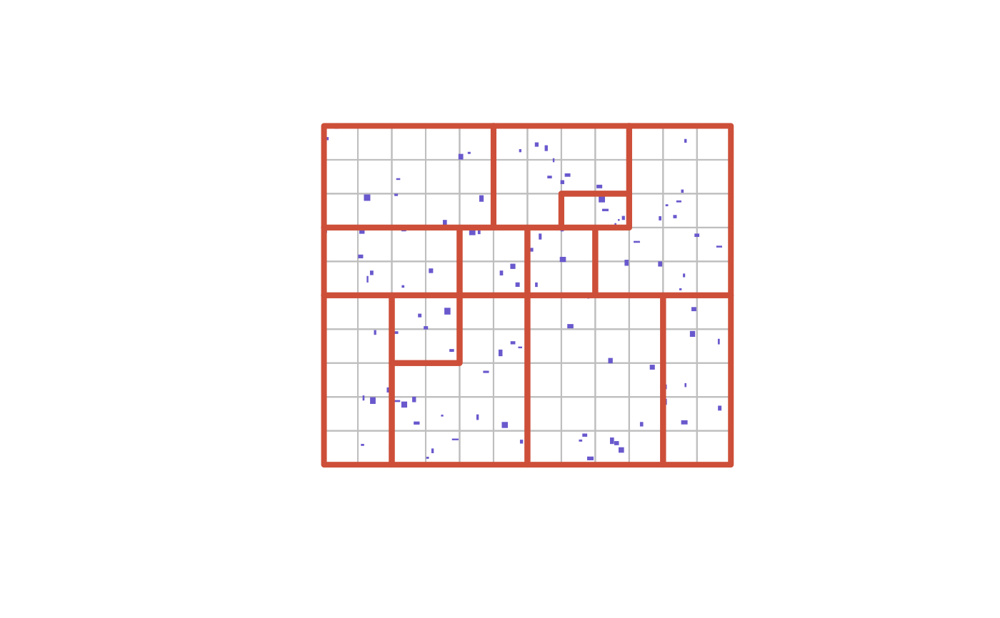

Deterministically merge a set of polygons with possible parameters defined by the user.
desplim_merge.RdFunction for merging a set of polygons, with optinal rules defined by the user. The merging process is deterministic, leading to reproducible results on subsequent runs with the same input data and rules.
Usage
desplim_merge(
input_polygons,
input_buildings = NULL,
compact_method = "desplim",
compact_threshold = 0.7,
compact_allow = 0.2,
area_threshold = 10000,
enclosed_threshold = 0.8,
building_threshold = 5
)Arguments
- input_polygons
object of class sf of type POLYGON to be merged.
- input_buildings
object of class sf of type POLYGON or MULTIPOLYGON. An optional sf object representing buildings which should be considered when merging. Default is
NULL.- compact_method
string; chosen method for calculating compactness of polygons. Default is
"desplim", using the internaldesplim_compactnessfunction. Other options include"polsby","schwartz"and"convex_hull"from theredistmetricspackage.- compact_threshold
numerical; the baseline expected compactness of the output polygons. Default is 0.7.
- compact_allow
numerical; the fraction of polygons allowed to fall below
compact_tolerance. Default is 0.2.- area_threshold
numerical; the minimum required area of merged polygons. Default is 10000 units.
- enclosed_threshold
numerical; the fraction of a polygon border shared with a single neighbour for it to be considered enclosed (and flagged for merging). Default is 0.8.
- building_threshold
integer; the minimum number of required buildings within merged polygons if
input_buildingsis provided. Default is 5, but sis set to 0 ifinput_buildingsis not provided.
Details
There are no requirements for all polygons being adjacent to each
other. Although named input_buildings, any sf object of type POLYGON or
MULTIPOLYGON can be provided for this argument. For details about the
compactness metric, please see the dedicated vignette. It is not recommended
to set compact_allow too close to 1 and compact_tolerance too low.
This is especially true if compact_method is set to "polsby".
Examples
# Create grid
crs <- 32632
grid_area <- sf::st_bbox(
c(xmin = 0, ymin = 0, xmax = 1200, ymax = 1000),
crs = crs
)
grid_poly <- sf::st_as_sf(sf::st_make_grid(
grid_area,
cellsize = 100,
square = TRUE
))
plot(sf::st_geometry(grid_poly), border = 'grey')
# Create buildings
n_buildings <- 100
set.seed(420)
building_centers <- sf::st_sample(sf::st_as_sfc(grid_area), size = n_buildings)
list_of_buildings <- lapply(sf::st_geometry(building_centers), function(point) {
x <- point[1]
y <- point[2]
width <- runif(1, min = 5, max = 20)
height <- runif(1, min = 5, max = 20)
corners <- rbind(
c(x - width / 2, y - height / 2),
c(x + width / 2, y - height / 2),
c(x + width / 2, y + height / 2),
c(x - width / 2, y + height / 2),
c(x - width / 2, y - height / 2)
)
sf::st_as_sf(sf::st_sfc(sf::st_polygon(list(corners))), crs = crs)
})
buildings_sf <- do.call(rbind, list_of_buildings)
plot(sf::st_geometry(buildings_sf), col = 'slateblue3', border = NA, add = TRUE)
# Merge with default settings
grid_merged <- desplim_merge(
input_polygon = grid_poly,
input_buildings = buildings_sf
)
#> Linking to GEOS 3.12.1, GDAL 3.8.4, PROJ 9.4.0; sf_use_s2() is TRUE
print(grid_merged, n = nrow(grid_merged))
#> Simple feature collection with 12 features and 3 fields
#> Geometry type: POLYGON
#> Dimension: XY
#> Bounding box: xmin: 0 ymin: 0 xmax: 1200 ymax: 1000
#> Projected CRS: WGS 84 / UTM zone 32N
#> geometry area compactness building
#> 1 POLYGON ((700 700, 700 800,... 20000 0.9410508 5
#> 2 POLYGON ((200 400, 200 500,... 40000 0.9451730 5
#> 3 POLYGON ((0 200, 0 300, 0 4... 100000 0.9327796 7
#> 4 POLYGON ((1000 200, 1000 30... 100000 0.9327796 8
#> 5 POLYGON ((400 600, 400 700,... 40000 0.9451730 5
#> 6 POLYGON ((600 600, 600 700,... 40000 0.9451730 5
#> 7 POLYGON ((0 900, 0 1000, 10... 150000 0.9374167 10
#> 8 POLYGON ((200 300, 300 300,... 160000 0.9030667 15
#> 9 POLYGON ((600 300, 600 400,... 200000 0.9408510 11
#> 10 POLYGON ((400 500, 300 500,... 80000 0.9454119 8
#> 11 POLYGON ((900 700, 900 800,... 170000 0.9297749 13
#> 12 POLYGON ((500 900, 500 1000... 100000 0.9138095 8
plot(sf::st_geometry(grid_merged), lwd = 4, border = 'tomato3', add = TRUE)
